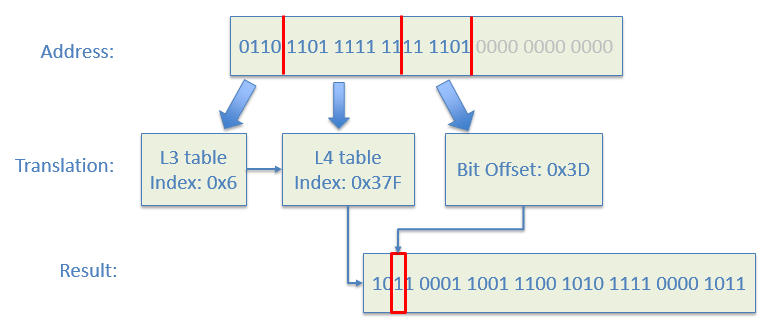

Heap Overflow Detection (for Page)
Heap overflow is a big problem. [WindowsHeap][1]discussed some machenisms to detect heap overflow.
In EDK II, we may setup a guard page around the allocated pages. The concept is similar to the guard page for stack. The gEfiMdeModulePkgTokenSpaceGuid.PcdHeapGuardPageType indicates which type page allocation need guard page. The gEfiMdeModulePkgTokenSpaceGuid.PcdHeapGuardPoolType indicates which type pool allocation need guard page. The gEfiMdeModulePkgTokenSpaceGuid.PcdHeapGuardPropertyMask is a mask to control Heap Guard behavior. All these Platform Configuration Database (PCDs) are defined in https://github.com/tianocore/edk2/blob/master/MdeModulePkg/MdeModulePkg.dec.
If heap guard for page allocation is enabled, whenever there is an AllocatePage() request, the core allocates 2 more pages. One page is before the allocated pages and the other is after. Both are set be NOT PRESENT in the page table. If the overflow happens, the page fault exception is triggered immediately. See figure 4-7.

Figure 4-7 HeapGuard for Page Overflow Detection
This enhancement is in https://github.com/tianocore/edk2/blob/master/MdeModulePkg/Core/Dxe/Mem/Page.c. If the IsPageTypeToGuard() returns TRUE, CoreInternalAllocatePages() uses CoreConvertPagesWithGuard() to allocate 2 more pages and calls SetGuardForMemory(). The later calls SetGuardPage() twice to set the guard page before and after. SetGuardPage() calls SetMemoryPageAttributes() to clear PRESENT flag.
In the last step, SetGuardForMemory() calls SetGuardedMemoryBits() to mark the memory range as guarded. This bitmask will be checked in UnsetGuardForMemory() when FreePages() is called.
Care must be taken to avoid the re-entry issue. This re-entry risk stems from the fact that SetMemoryPageAttributes() may need to split a page table entry, which in turn needs to call the AllocatePages() API again. The global variable mOnGuarding is used to record the protection state.
One interesting feature for AllocatePages() is that the pages can be freed partially. Figure 4-8 shows a possible AllocatePages/FreePages sequence. AdjustMemoryF() is used to adjust the start address and number of pages to free according to Guard. The purpose of this function is to keep the shared Guard page with adjacent memory block if it's still in guard, or free it if no more sharing. Another purpose is to reserve pages as Guard pages in partial page free situation.

Figure 4-8 HeapGuard in Partial Page Free
Guarded Heap Map:
In order to track if a page is guarded or not, the core defines a guarded memory bitmap table. To simplify the access and reduce the memory used for this table, the table is constructed in the similar way as page table structure but in reverse direction, i.e. from bottom growing up to top. See Figure 4-9.

Figure 4-9 Guarded Heap Map
This table uses 1 bit to track 1 page. 1 UINT64 entry tracks 256K memory. 1024 UINT64map table tracks 256M memory. The 5 levels of table can track any address of memory in 64bit system.
For a system with 4G memory, two levels of tables can track the whole memory, because two levels (L3+L4) of map tables have already covered 37-bit of memory address. That means we just need 1-page (L3) + 2-page (L4) memory (3 pages) to track the memory allocation works. In this case, there's no need to setup L0-L2 tables. Figure 4-10 shows a real example on how to get the guarded page info from an address.

Figure 4-10 Guarded Heap Map (example)
Given the memory address 0x6DFFD000, the L3 table index is first 4 bits, the L4 table index is the 10 bits followed by. The corresponding guarded heap entry in L4 table index 0x37F – 0xB19CAF0B. The bit offset is the 6 bits followed by L4 table index. In this case, it is 0x3D. Since bit 0x3D of 0xB19CAF0B is 1, we can know the page 0x6DFFD000 is guarded.
The guarded heap map management is at https://github.com/tianocore/edk2/blob/master/MdeModulePkg/Core/Dxe/Mem/HeapGuard.c. mGuardedMemoryMap is the pointer to table tracking the Guarded memory with bitmap, mMapLevel is the Current depth level of map table pointed by mGuardedMemoryMap. SetGuardForMemory() is to set head Guard and tail Guard for the given memory range.UnsetGuardForMemory() is to clear head Guard and tail Guard for the given memory range.
[1][WindowsHeap] Preventing the exploitation of user mode heap corruption vulnerabilities, 2009